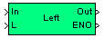

| MBDS Environment |
|
String Left |
MATLAB Helpdesk |
General
Get a specified number of the most left characters of a string.
Library
DescriptionMBDS Blockset

The specified number of the most left characters are output by the block. The number of characters is specified by input L. For different values of L the block behaves as follows:
The block has an ENO (Error Number Output) output port to indicate an error. The ENO output is set to false in case of an error. If the block has been processed Show ENO port The ENO output port can be hidden/shown by the parameter 'Show ENO port' in the block mask.
- If L exceeds the string length of string In1, the string is output without changes, but the ENO output is set to false.
- If L is zero an empty string is output and the ENO output is set to true.
- If L is negative an empty string is output and the ENO output is set to false.
Inputs and Outputs
Example
Port I/O Data Type Description In
In
uint8 (N) Input string L
In Any integer Number of characters (L) are taken from the entered string, starting at the left. Out Out uint8 (N) Resulting string ENO Out boolean
ENO is false (0) if an error has been occurred. If the block has been processed correctly the ENO Output is set to true (1).
To illustrate the behavior of the block some examples shall be discussed. Suppose the string 'abcde' is connected to input In.
Example 1:
- L = 3 : 3 characters are extracted from the string, starting at the left.
- Result: 'abc'
Example 2:
- L = 7 : 7 characters are extracted from the string, starting at the left. However, as the string only contains 5 characters, the string is output without any changes.
- Result: 'abcde'
Example 3:
- L = -2 : The negative input causes an empty output.
- Result: ''
For more information refer to the example.